In our initial exchanges, when talking to Wang Zhiyuan about himself, I always found myself perplexed by his descriptions of “returning” and “departing” during certain trips he took in some year. I was unsure whether his “return” destination referred to Beijing or Sydney. Seeking clarity, I made an agreement with him to specify the destination of our conversation as either the departure point or to use “going” consistently. Perhaps in his subconscious mind, there isn’t really “returning,” only “going.” Indeed, “going” is a state more bewildering, unknown, uncertain, challenging, and certainly freer than “returning” or “coming.”
About a decade ago, his work “Close to the Warm” (2013) (fig.1) caught my attention (1). A friend from the gallery where his work was exhibited mentioned a piece done in Chinese characters that was worth seeing. Yet, I habitually found it uninteresting upon hearing about it, because I’ve always harbored personal biases against Chinese characters in contemporary art. In this context, the mention of “Chinese characters” triggered my stereotypical impressions: if done by a Chinese artist, it must be a post-colonial phenomenon; if done by a non-Chinese, it’s either exoticism or an insincere form of flattery (the latter has been particularly prevalent in recent years). However, upon seeing it in person, I immediately realized it was not as I had imagined. Wang’s piece “unfolded” on a white wall, with a regular light bulb illuminating the center, surrounded by thousands of white paper notes densely packed together. Each note bore a printed word in black. Because the word filled the white paper chip entirely, making the white wall looked as if thickly dotted with these fly-like black characters (fig.2).However, the fonts were small, and the quantity was large, so from a distance, the piece resembled a swarm of flies around the light bulb, giving a sense of flies rushing into a flame and falling to the ground, a feeling even enhanced by the papers “falling” to the ground near the base of the wall. Yet, the most intriguing aspect of this piece is that these words had different connotations, categorized into positive, neutral, and negative, distributed around the light bulb from near to far. In other words, the closer to the light bulb, the more positive the connotation of the words, while the further away, the more negative—this arrangement provided both a panoramic view and close interest. The contrast between positive and negative, light and dark, made the significance of this piece extraordinary. The light bulb became the sun, In the “sunlight-filled” area, where ” the situation is excellent ” (2) composed entirely of positive words, no ” dissent” is allowed to exist. In the darkness beyond the light, it’s either “deep waters and fiery heat” (3) or “ghosts and demons” (4). Such associations may not be advisable, and even appear to be somewhat forced, but this scale of interpretation isn’t far-fetched for Wang Zhiyuan, born in mainland China in 1958 and immigrated to Australia after the 1989 “Tiananmen Incident”.
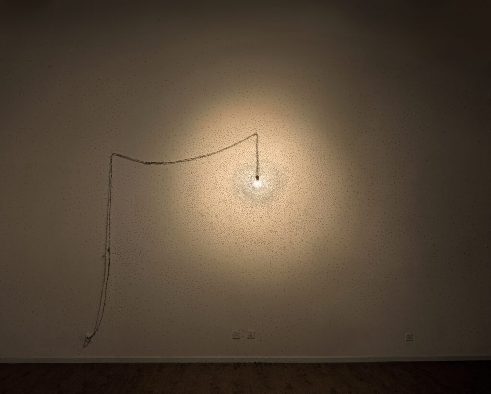
1.Close to the Warm, light bulbs, wires and stickers, variable dimensions, 2013
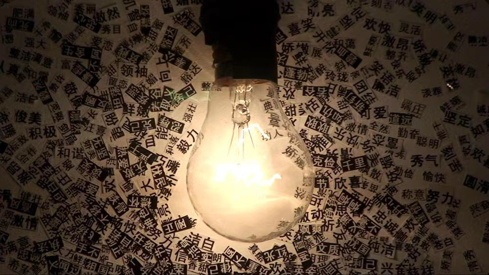
2. Close to the Warm (detail)
The use of Chinese characters is a technique that Chinese artists are naturally inclined towards (5), more precisely, it’s a readily available identity strategy, especially during the 1990s when China experienced another “encounter” with the West, primarily led by the United States. The most typical examples include Xu Bing’s “Book from the Sky” (1987-1991) and “A Case Study of Transference” (1993). For Chinese artists living abroad, Chinese characters are a natural resource for their identity, which is easy to understand and indisputable. “Identity” needs to be built on the basis of differentiation, and the best way to create differentiation is through form. That’s why artists like Xu Bing focus on the form of Chinese characters, or more precisely, derive meaning from reshaping this form, and such “meaning” often relates to the intersection of Chinese and Western civilizations. However, Wang’s use of Chinese characters differs from that of his teacher. He doesn’t seek to deconstruct the characters but rather utilizes their meanings. The greater distinction is that Wang’s textual works emerged after 2010. By then, with the normalization of exchanges between China and the West, Chinese characters were no longer the cultural curiosity of the 1980s and 1990s “encounter” period, and their role as props for self-Orientalization in contemporary art had become obsolete.
Wang’s sensitivity to Chinese characters did not suddenly emerge in the past decade or so. In fact, Wang himself is a person who loves reading. In the late 1970s, after graduating from Tianjin Arts and Crafts Vocational College, he was assigned to work at a publishing house located in the colonial-era Heping District of his hometown Tianjin, where he engaged in tasks such as book cover design. There, a large number of translated works published before the Cultural Revolution and books by writers from the Republican Era (1912-1949) were intentionally hidden by the leader of the publishing house in the basement, thus surviving the vandalism of the Cultural Revolution. When these books resurfaced, they met the needs of this young man who had just experienced the great cultural famine. However, the use of Chinese characters in Wang’s artistic career came “late,” which actually further illustrates that his choices were not made to cater to the curious views of others— if using Chinese characters to establish a cultural identity, the 1990s in the West would have been the best time and place.
During the “pandemic period,” Wang’s large-scale work “I Know the Darkness” (2022) once again made extensive use of text (fig.3. 4). This piece consists of ten independent sheets of paper, each almost identical in form. They are vertically arranged, and charcoal lines are randomly drawn from top to bottom on each sheet. When the middle part of the paper is reached, characters are written from left to right with the same charcoal, continuing until the bottom of the paper. Then, the process continues by covering the text with more lines from the middle of the paper, gradually becoming thinner, creating a fading effect for approximately a quarter of the entire area. However, from the viewer’s perspective, the opposite effect is created: the text “enters” the darkness or “emerges” from it. Although time has passed, this scene seems to echo the sentiment of Wang’s contemporaries, the poet Gu Cheng’s “Night has given me black eyes, I use them to seek light.” He realized that dark things are hidden beneath language or that language can create darkness. In this work, Wang portrays the darkest side of language, revealing that language can reverse and reshape not only facts but also consciousness, and the “darkness” brought by language is endless and deranged.
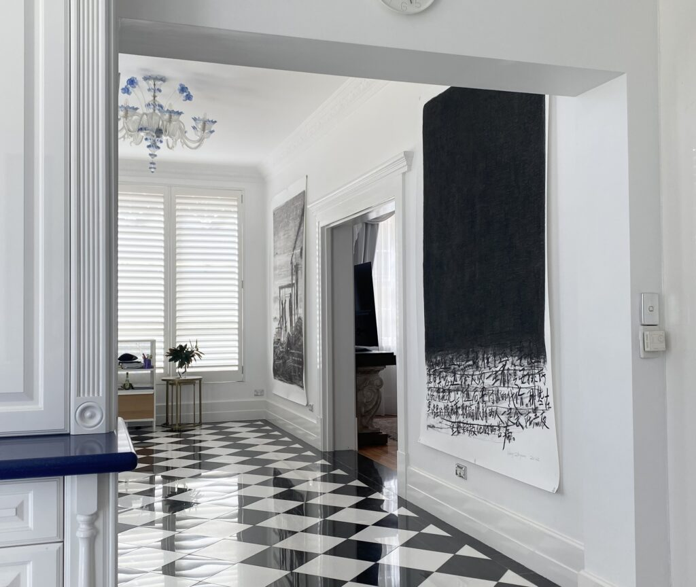
3. I Know the Darkness, installation view
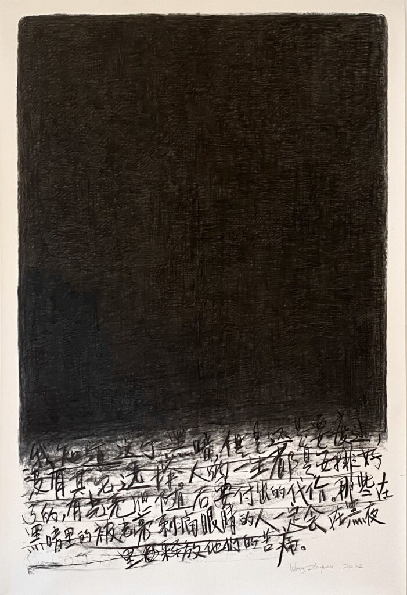
4. I Know the Darkness, charcoal on paper, 225x152cm, 2022
Unlike most artists who use the form of Chinese characters to evoke Orientalism, evidently, Wang’s contemplation transcends mere cultural encounters. Instead, this view towards darkness originates purely from his individuality. Thus, these characters are meaningful and recognizable inscriptions, making this piece a fusion of text and imagery. The meanings of these characters are neither explicit, nor as abstract as those found in stream-of-consciousness novels. For instance, ” I know the darkness yet still must pass through it because there is no choice. One’s life is predetermined, and for light there’s a price. People in the dark with eyes pierced by the light will release their pain into the dark night. ” ” Beauty like the setting sun, you should leave. Let the wild wasteland give solitude to the dead. Let it go, it’s just an extra gift, the suffocation of the wild wind can no longer move far away. I know the darkness can’t leave and circles to start again. ” These words seem to resonate with the traumatic, rather than optical and progressive modernism he experienced in his youth, or, an inheritance from the modernists such as Goya, Blake, Baudelaire, extending to Hai Zi (1964—1989) and Gu Cheng (1956—1993).
Consistent with the post-Cultural Revolution experiences of mainland Chinese artists of his generation, Wang’s encounter with modernity during his youth can be said to have begun with the ethos, consisted of progressive fantasies and aestheticism. This fusion was, in essence, still a collective emotional guidance strategy formulated by the authorities for their own legitimacy needs. However, it brought infinite aspirations and possibilities to the entire Chinese mainland at that time — at least it seemed so. “Progress” then was almost synonymous with modernization and westernization (not necessarily aligned with the “progress” in CCP culture, which specifically referred to individuals actively seeking to join the party), when Wang Zhiyuan graduated from the Tianjin School of Arts and Crafts in 1978, his creation was “Chen Jingrun” (oil painting, now lost). Mathematician Chen Jingrun (1933—1996) was the latest topic at the time, in line with the authorities’ strategic efforts to placate and rehabilitate intellectuals, articulated with the so called the “Spring of Science” (the “National Science Conference” held on March 18, 1978). In this regard, the urgent task for the CCP was to re-establish a positive image of intellectuals in the public sphere, who had been stigmatized for over twenty years. In January 1978, the first issue of “People’s Literature” (fig. 5) published Xu Chi’s reportage “The Goldbach Conjecture,” which was subsequently republished in the more influential “Guangming Daily” (February 16, 1978) and “People’s Daily” (February 17, 1978), causing a nationwide sensation. As a result, Chen Jingrun became one of the first intellectuals rehabilitated by the CCP. Although in 1977, Xu Chi had also written “The Light of Geology,” praising geologist Li Siguang, it was Chen Jingrun who received direct support from Deng Xiaoping, and it was from him that the official standards of being “both red and expert” for intellectuals were gradually negated. Chen Jingrun’s story was the most widely circulated, coupled with Wang Zhiyuan’s childhood interesting for mathematics, it is not surprising that he chose the newly created celebrity as the theme of his thesis work.
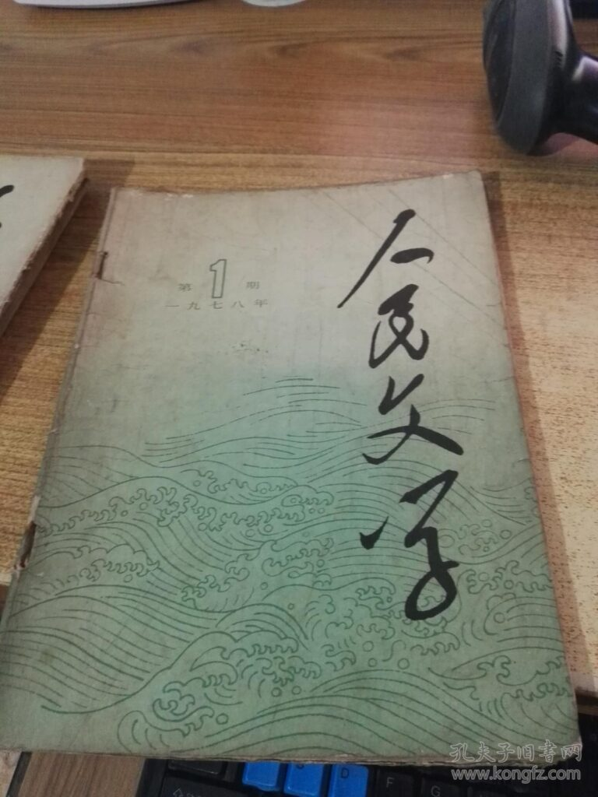
5. People’s Literature Magazine, first issue, January, 1978
During Wang’s modernist period, another “visitor” — aestheticism — seems not to have lingered in his later works for too long before hastily departing. For this phase, only two formal pieces remain, one being the oil painting “Spring, Summer, Autumn, Winter” (1982), and the other being the print “Wildflower” (1982). The former depicted the four seasons with a lyrical tone and color, while the latter portrayed a bare-chested sister holding her cute little brother on barren land (fig. 6). The inspiration for this work came from his experience in Xinxiang, Henan Province in 1982 as a student (Henan being the province with the highest death toll from starvation during the “Great Leap Forward” movement from 1958 to the 1960s). Works of literature and art depicting poverty and the tragic fate of individuals during the “Cultural Revolution” , known as “Scar literature”(Shang Hen Wen Xue) and “Scar Art” (Shang Hen Mei Shu) were in parallel with the vigorous spirit of “Reform and Opening Up” in the early 1980s. As for how this parallel relationship converged, the extremely popular documentary “River Elegy” (He Shang), which aired in 1988 provided a precise analysis and (in the author’s view, overly optimistic) solution. However, this convergence, to a degree also reiterates the close relationship between Romanticism and tragedy. In fact, not long after, the intellectual and artistic circles had already begun to reflect on humanism. However, Wang Zhiyuan’s life decision kept him away from such discussions and divisive reflections. It can also be said that Wang Zhiyuan, after briefly experiencing the sudden onset of “modernism,” swiftly entered the camp of “postmodernism.” For his contemporaries who stayed in China, the traumas, enlightenment, progress, and tragedies brought by “modernism,” followed by the waves of “postmodernism” brought about by the subsequent opening up to the outside world and consumer culture, seemed linear, as if modernism naturally led to postmodernism. For Wang Zhiyuan, however, the relationship between the two was not so straightforward: deconstruction and appropriation of these typical postmodern artistic methods became the standard remedies of art in the world he suddenly immersed himself in. This prompted him to completely break away from the past Soviet-style training and brief humanism, discard the heavy burden of collective historical baggage, avoid prolonged immersion in the “scar” interval, “the death of poets,” collective trauma, and he suddenly “lighten” up. Wang Zhiyuan’s journey from mainland China to Australia can be said to have transitioned precisely from China’s “modern” to the “postmodern” (not the Chinese version) and multicultural Western society.(6)
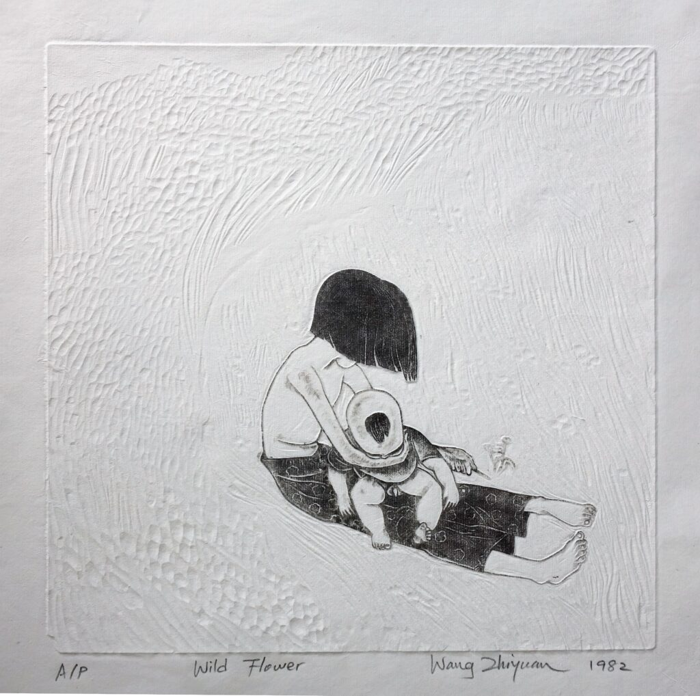
6. Wild Flower, rice paper, Ink, 30x30cm, 1982
Like many young people who grew up during the relatively liberal period of the 1980s, the “Tiananmen Incident” in 1989 marked the end of idealism for Wang, and yet it paradoxically sparked a greater thirst for Western ideals and embracing the world among this group, until concrete actions were taken. At the end of that year, after careful consideration, Wang did not choose the popular destination among those leaving the country—New York—but instead opted for Sydney, embarking on a new life. At that time, Australia, due to geopolitical and economic considerations, had an overall attitude towards China from top to bottom in both the political and cultural spheres that was accepting, friendly, and embracing. Prime Minister Bob Hawke’s (1929-2019) emotional condemnation of the “Tiananmen Incident ” in front of the press remains vivid in people’s memories. Naturally, Chinese students who arrived in Australia around 1989, including Wang, received strong support from the Australian government and society, and this friendly atmosphere lasted from the late 1980s to the first decade of the 21st century. Bob’s successor, Paul Keating (in office from 1991 to 1996), also adopted a pro-China stance.(7) During Keating’s tenure, Australia’s cultural and artistic circles shifted their focus from traditional Europe and North America to Asia. The exhibition “Asia-Pacific Triennial of Contemporary Art” in 1993 at the Queensland Art Gallery is a testament to this shift.
Of course, this was not the first appearance of contemporary art from the Asia-Pacific region, including China, in Australia. As early as 1991, Hong Kong collector and gallery owner Johnson Chang (Chang Tsong-zung) and critic Li Xianting from mainland China collaborated to curate the exhibition “MAO GOES POP: China Post 1989” at the Museum of Contemporary Art Australia (MCA). It showcased works by the “signature” Chinese contemporary artists such as Xu Bing, Yu Youhan, and Zhang Xiaogang. This was a concentrated presentation of an art scene entirely based on contemporary Chinese reality that was transported to Australia as a whole, but logically connected to Johnson Chang’s “Post 1989” series. Similar exhibitions include “New Art From China: Post Mao Product” (1992), curated by Claire Roberts, an Australian curator of Chinese contemporary art who had studied at the Central Academy of Fine Arts. These two exhibitions at least demonstrate the acceptability of Chinese contemporary art in Australia and the potential for it to reach the global art stage.
However, unlike those contemporary artists who had already matured in their style on the mainland, Wang Zhiyuan was among the first Chinese mainland artists to actually live and work in Australia (8). Initially, there was mutual unfamiliarity between Wang Zhiyuan and Australia. The artistic atmosphere in Australia also differed significantly from that of mainland China. In terms of content, the dominant themes of Australian culture in the 1990s were race, sex, gender politics, globalization, multiculturalism, and institutional critique art. Understandably, these concepts could not possibly exist in the consciousness of someone raised in mainland China. This point can be easily demonstrated through a simple comparison: the officially termed “56 ethnic groups” in mainland China have essentially been assimilated into the dominant Han ethnicity under one-party rule; sex has always been a taboo topic; gender and politics have had little connection from ancient times to the present; globalization’s impact on China did not occur until the 19th century; as for institutional critique, it was unimaginable because the term “institution” in the Communist Party’s culture is synonymous with “government” and CCP. Therefore, institutional critique could also be considered anti-party behavior, which is diametrically opposed to the reverence for “political correctness” in Western society, constituting a significant form of “political incorrectness.” However, in terms of the stylistic logic of contemporary art, Australia is still part of the Western world, where deconstruction had already been established as legitimate. Conscious appropriation, irony, replication, and challenging everyday experiences were already present in the subconscious of artists’ creations.
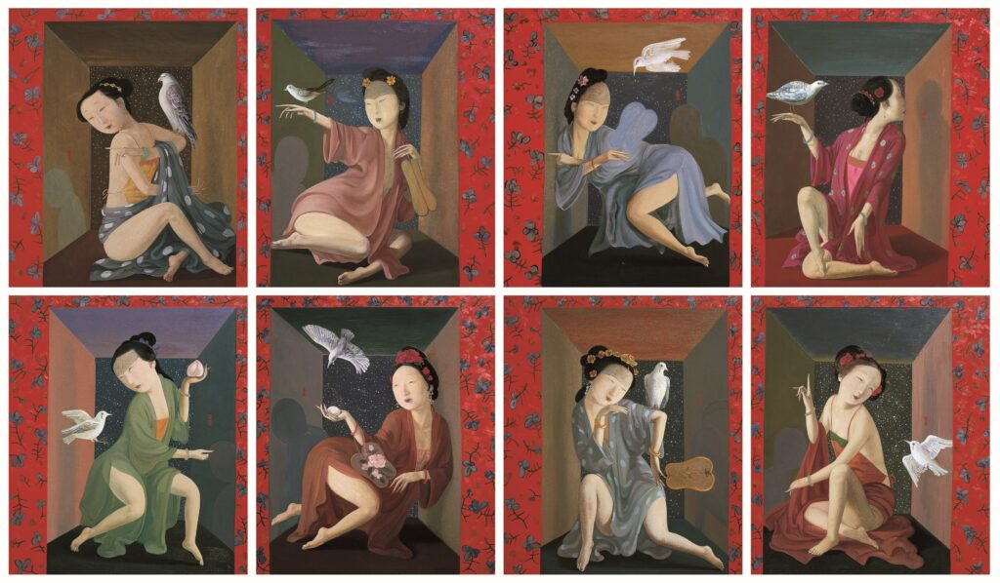
7. Beauties Captures in Time, oil on canvas, 368x220cm, 1994
The oil painting series “Beauties Captures in Time” completed by Wang in 1994, consisting of eight works, is a combination of appropriation and the tradition of “Spring Palace Paintings” (erotic art) that emerged in the Ming Dynasty in China (fig. 7). However, it should be noted that Wang does not harbor any obsession with Chinese tradition. It is worth noting that as an artist with a racial identity living in Australia, he experienced two fundamentally different yet somewhat related parallel “movements” in the 1990s compared to contemporary artists on the mainland. He did not engage in the “Political Pop” movement in mainland China during the 1990s and early 21st century, which received considerable acclaim primarily from the West, notably the United States. Instead, he diligently searched for traditional cultural resources in China from the other side of the Pacific Ocean. The principles of identity politics in contemporary art are not difficult to understand, and Wang Zhiyuan is very honest about it. However, “identity” meant different things for artists on the two sides of the Pacific Ocean at that time: for those of his generation living in China, the most prominent identity in the 1990s was not merely “Chinese,” but rather Chinese who had just experienced a major catastrophe, years of isolation, and political “turmoil” in the aftermath. On the other hand, Wang Zhiyuan’s identity persona across the ocean was that of a traditional Chinese person who had recently cut off his queue. If 1990s Chinese culture was a rapidly spinning kaleidoscope, then Australia at the time was an era where multiculturalism was seen as trendy fashion.
In his “Happiness” (acrylic on canvas), Wang continues the approach of blending the Chinese identity with postmodern and multicultural logic, presenting themes of gender diversity. The subsequent wall sculpture “One Gives Birth to Two” (fig. 8) can be seen as Wang Zhiyuan’s summary of his self-oriental identity phase before the arrival of the new millennium. Although the name of this series is derived from Laozi’s “Tao Te Ching,” it is actually a wildly imaginative creation by Wang under the influence of Eastern imagery. It combines elements of surrealistic humor, abstract figures reminiscent of Chen Hongshou (Ming Dynasty painter), and the grotesque creatures found in the “Classic of Mountains and Seas,” yet its origins are not tied to any specific text. This work marks a turning point in Wang’s fate in Australia. In 1997, he participated in the influential exhibition “IN AND OUT: CONTEMPORARY CHINESE ART FROM CHINA AND AUSTRALIA,” jointly curated by Huangfu Binghui and others. This caught the keen interest of Richard Dunn, the Dean of Sydney College of Art at the time, who proposed that Wang pursue postgraduate studies at the college. However, this would happen two years later.
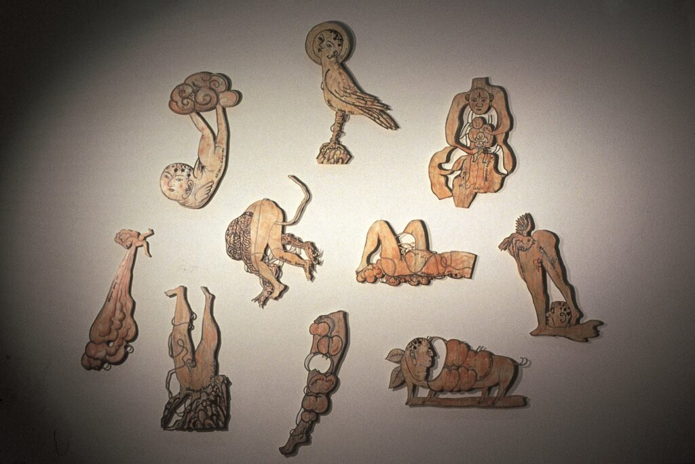
8. One Gives Birth to Two, plywood, acrylic, variable dimensions, 1997
Wang Zhiyuan’s thesis project is a set of 40 MDF （Medium-Density Fiberboard）wall reliefs titled “Fragments” (2000). The images, whether new or old, all come from the vast world of his life and everyday experiences: symbols like the “@” sign representing the internet, mosquito coils, Australian kangaroos (logos), brushes, religious figures, stylized clouds, flowers, butterflies, women’s underwear, and more (fig. 9). These images are not original to Wang; they are all ready-made products. However, Wang Zhiyuan changes their colors and contexts, and translates the original meanings of these symbols (items) through arbitrary combinations. This is precisely the intention of Wang Zhiyuan’s work: to question the sacred status of originality through appropriation. Similarly, “Magic Box” (2001) also adopts the form of wall reliefs, but at the base of the displayed wall, there is a box, indicating that all these daily ready-made symbols or object graphics “fly out” from there. The mixing of ancient and modern, Eastern and Western elements illustrates that this is the Pandora’s box or Aladdin’s lamp of postmodernity, which is fascinating, enchanting, and irresistible (fig. 10).
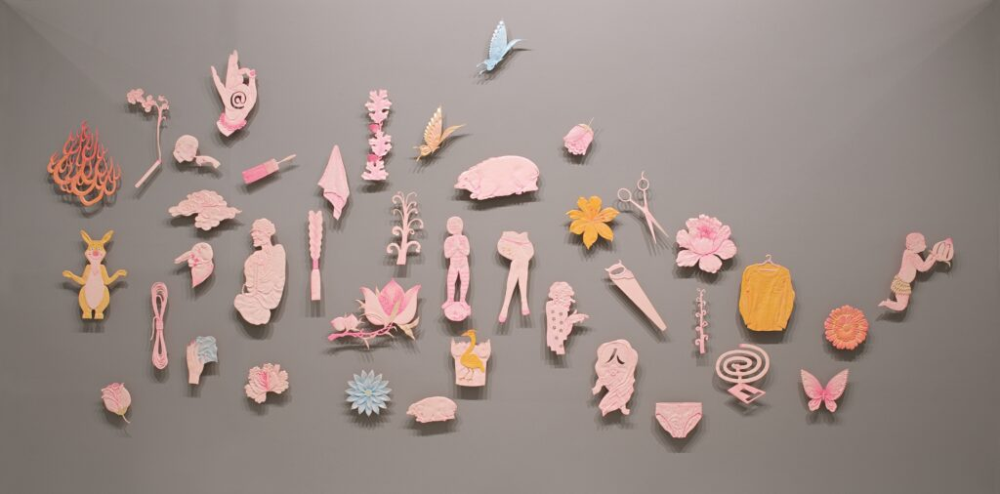
9. Fragments, MDF, acrylic paint, variable dimensions, 2000
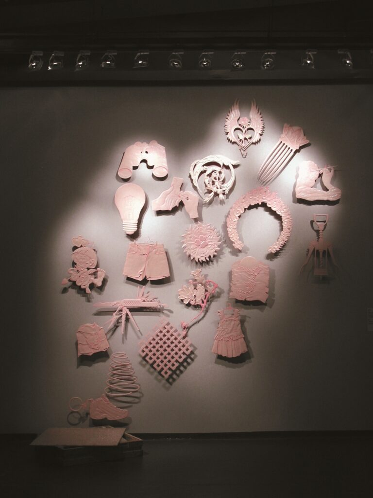
10. Magical Box, MDF, acrylic paint, variable dimensions, 2001
The typical theme of Western art in the 1990s was to parody originality through replication and appropriation. Wang Zhiyuan possesses a clear and conscious understanding of this, which is fundamentally different from the unconscious appropriation seen in mainland Chinese artists of the same era, such as “Political Pop” and “Gaudy Art,” or “Cynical Realism.” The latter treats deconstruction as a technique to deal with their (mainly political) subjects, whereas in Wang’s two sets of works, theme and form are fused into one. Through appropriation, he expresses the very act of appropriation culture itself. To delve deeper, this reflects the cultural characteristics of a commercial society in the information age. In the realm of ideas, profound responses include Baudrillard’s views on consumer symbols: ” Curiosity and misrecognition denote one and the same form of overall behaviour towards the real, a form of behaviour generalized and systematized by the practice of mass communications and characteristic, therefore, of our `consumer society’. (9) This is the denial of the real on the basis of an avid and repeated apprehending of its signs.” In this sense, the interpretive framework for Wang’s works should not be based on Western interpretations of contemporary Chinese artists in the “post-Mao era,” but rather should reference those who have followed the path of appropriation after Andy Warhol, such as Sherrie Levine, Barbara Kruger, and Richard Prince.
From Wang’s work in the years following, he seems to place more interested in women’s lingerie (fig.11). This interest has been prevalent in his work since his return to China from Australia in 2001, spanning another decade. It’s understandable that Wang’s generation of Chinese may find more creative freedom in an environment that tolerates the expression of erotica, having grown up in a time that was repressive of human nature. Furthermore, women’s lingerie symbolizes intimate desires in a private environment, a stark contrast to collectivism. In Wang’s youth, pornography was sinful; for instance, a “moral issue” was the quickest and least costly way to stigmatize political dissidents. From “Petite bourgeoisie sentimentality” (10), “hedonism” (11), to the ” languid tunes”(mi mi zhi yin) of the 80s (12), individuality, or rather humanity, was constantly suppressed in the name of pornography. More precisely, the purpose of setting pornography as taboo was not the goal; rather, the elimination of individuality was the true aim of collectivism, which Wang’s lingerie series directly confronts. He magnifies and exaggerates lingerie, making elaborate statements with them. When Wang began his lingerie series, he mainly juxtaposed domestic and foreign images in a playful manner on wall reliefs, such as Marilyn Monroe with a Chinese dragon, a Qing Dynasty-style beauty with Picasso’s women, and contemporary themes like AIDS and rocket launches. For instance, to maximize the explosive feeling caused by merging intimacy with publicity, he enlarged a previous sculpture featuring an AIDS-themed lingerie piece into four parts and installed a multimedia installation with a timed program; the piece would automatically open and close at set times during the exhibition, revealing a cross-shaped structure with video content (“Behind the Underpants,” 2008) (fig. 12).
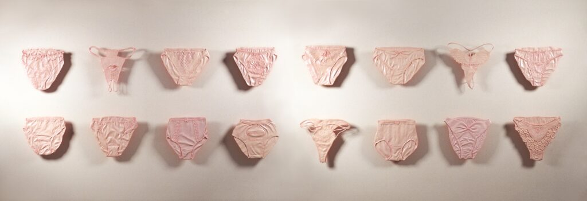
11. Underpants, MDF, acrylic paint, variable dimensions, 2001
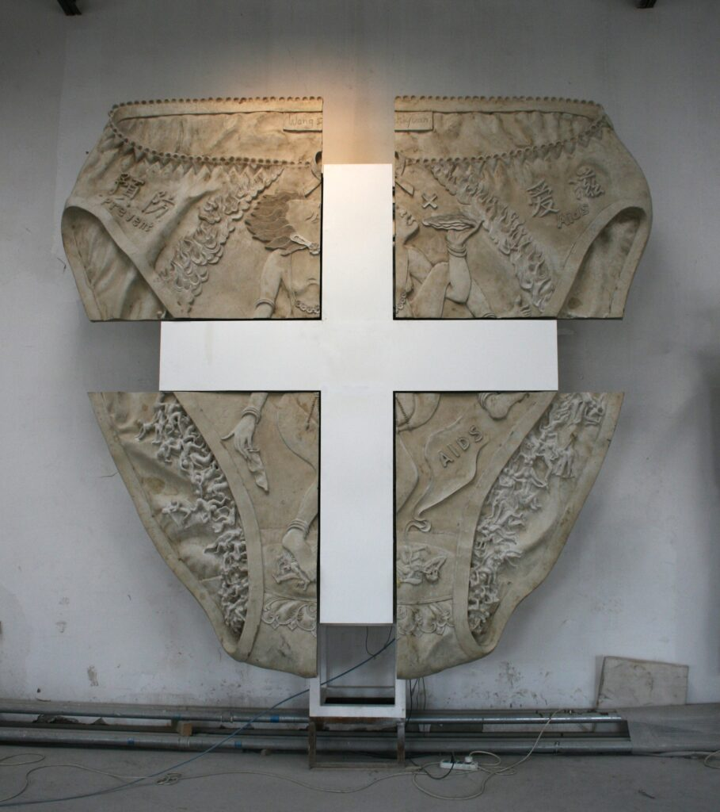
12 Behind the Underpants, Multimedia, 286x294x75cm, 2008
After obtaining his master’s degree from Australia in 2001, Wang Zhiyuan, who had lived in Australia for more than ten years, returned to the mainland due to personal reasons. He began to witness the economic takeoff of China after its accession to the World Trade Organization for more than a decade. China at this time was no longer the isolated state it was when he initially left; it had embraced the world and rapidly emerged as the protagonist of the new century, leveraging its advantage in labor-intensive industries and low human rights standards. If the juxtaposition of homosexuality, AIDS, and religious symbols in “Behind the Underpants” represents a “classic” theme in contemporary Western art, then his street graffiti “Teaching Lies” in 2005 (fig. 13) and the large-scale installation “Thrown to the Wind” (fig.14) in 2010 reflect the reverse culture shock that Wang Zhiyuan experienced after returning to China in the 21st century, representing important issues emerging in both civil and official spheres in developing countries. “Teaching Lies” depicts Wang hand-spraying his actual phone number and the words “Teaching Lies” on a wall, mimicking the ubiquitous ads for obtaining fake documents, certificates, diplomata —unlawful shortcut not uncommon in a transitional society. In contrast, “Thrown to the Wind” is much more complex. Wang’s first studio in Beijing was located near the Feijia Village on the outskirts, where he was often struck by the spectacular and terrifying scenes of surrounding large-scale landfill sites (fig.15). He then planned to express this feeling in an equally striking manner. Wang collected a large number of plastic bottles and drums, cleaned them thoroughly, and densely fixed them on pre-welded frames. The distant view gives the impression of a tornado swirling up these plastic wastes high into the air.
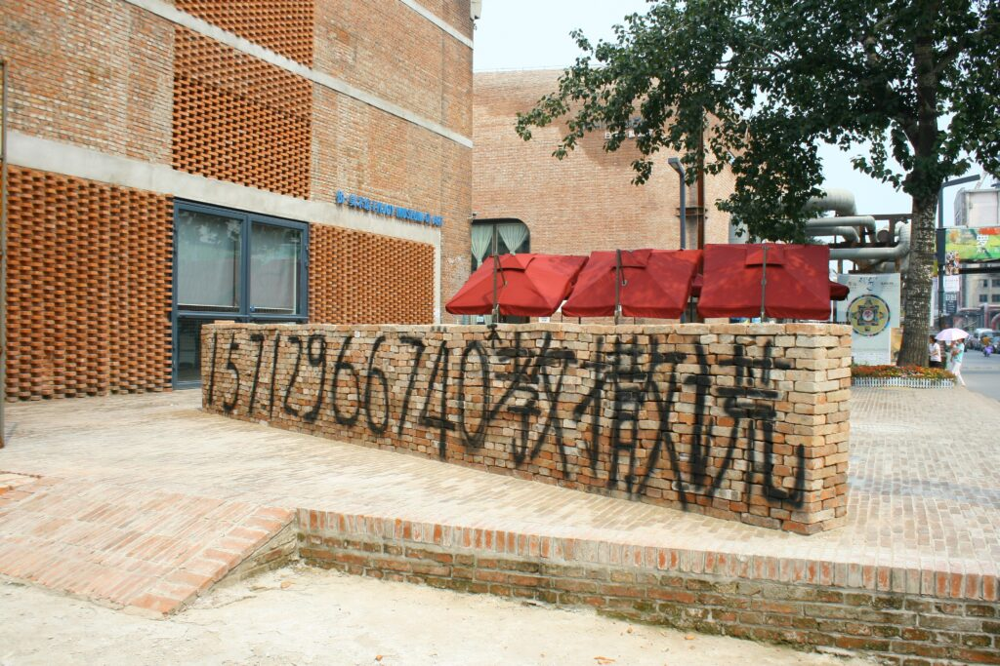
13. Teaching Lies, brick, spray paint, 8×1.2×0.3m, 2005
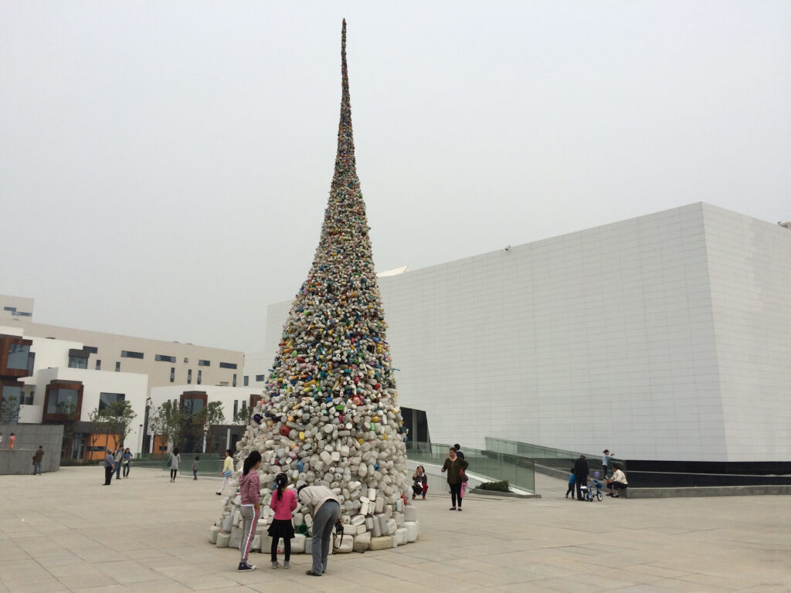
14. Thrown to the Wind, plastics, steel, 11.5×4 m, 2010
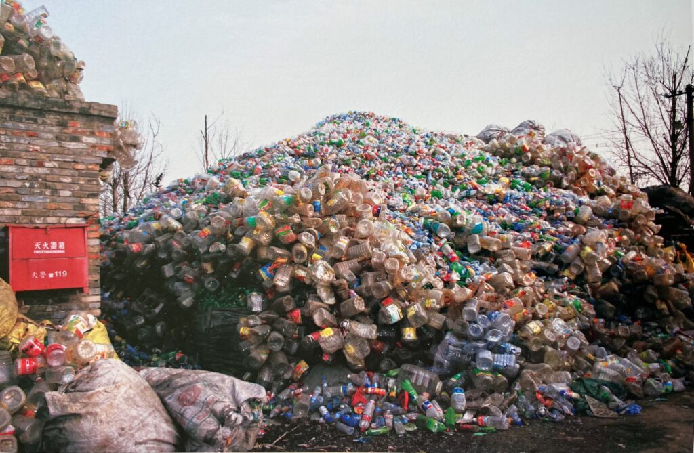
15. Plastic barrels and bottles piled up like mountains in the outskirts of Beijing, 2008
While the inspiration for this piece may stem from the environmental issues highlighted in China since the turn of the new millennium, its formal influences should be traced back to Australia, or rather, to Western contemporary art as a whole. Using inexpensive industrialized products to satirize the sublime and classicism was a common practice in the latter half of the 20th century in Western contemporary art, with Italy’s “Arte Povera” being the most well-known example. By the time of Wang Zhiyuan in the 1990s, Australia had witnessed a movement known as “Avant-Grunge,” characterized by anti-sublime and marginalized narratives as its primary visual features. (13)
In fact, contemporary art in Australia essentially began to take shape in the 1990s, around the time when Wang arrived. Ray Hughes, the first gallerist in Australia to exhibit Wang’s work, was one of the earliest professionals in Australia to pay attention to contemporary Chinese art. He recalls that when he founded his gallery in Queensland in 1969, the concept of “contemporary art” in Australia was still limited to private viewing and had not been widely accepted by the general public, let alone contemporary Chinese art. As mentioned earlier, although Australian institutions had held exhibitions of contemporary Chinese artists since the early 1990s, systematic collection and exhibition of Chinese contemporary art did not occur until after the turn of the millennium, with Wang deeply involved in this process. It cannot be denied that Australia’s interest in Chinese art was primarily driven by its interest in China, particularly as China gradually became Australia’s major trading partner after the new millennium. At a specific level, the largest collector and institution of Chinese contemporary art in Australia is Judith Neilson and her White Rabbit Art Foundation.Judith was deeply moved by Wang Zhiyuan’s metallic sculptures, which she first encountered at the Ray Hughes Gallery. This encounter led not only to her acquiring his art but also to her inviting him to become their family tutor. Over the course of six months, they developed a close and meaningful relationship, which extended to her husband Kerr and their two daughters. Following Wang Zhiyuan’s return to China, Judith appointed him as her art consultant from 2006 to 2012 (fig.16). This unique bond and chance meeting fueled Wang Zhiyuan’s unwavering determination to assist Judith in building an exceptional collection of contemporary Chinese art. His discerning taste and meticulous approach to selection were instrumental, particularly during the early stages of collection building. The White Rabbit Gallery’s holdings have become the most extensive collection of contemporary Chinese art in the world. There is no doubt that Judith’s steadfast commitment and substantial financial contributions are the foundation of this remarkable achievement. Her enduring passion for collecting Chinese art, even from afar in Australia, is truly inspiring. During Wang’s tenure, there was a rule: regardless of where the works were created, they had to be about contemporary China. “About China” could also be seen as a microcosm of the political and economic situation in Australia at the time—by 2017, Judith’s ex-husband, Australian financial tycoon Kerr Neilson, had invested up to AUD 6.5 billion in Chinese stocks, four times his investment in the United States, illustrating the confidence of the Western world including Australia in China’s future before 2018. (14) As for Wang’s decision to retire abruptly after six years as the consultant, it’s difficult to summarize the reasons in simple terms. Perhaps he keenly sensed some changes, but more importantly, it was to maintain a state of independence and freedom.
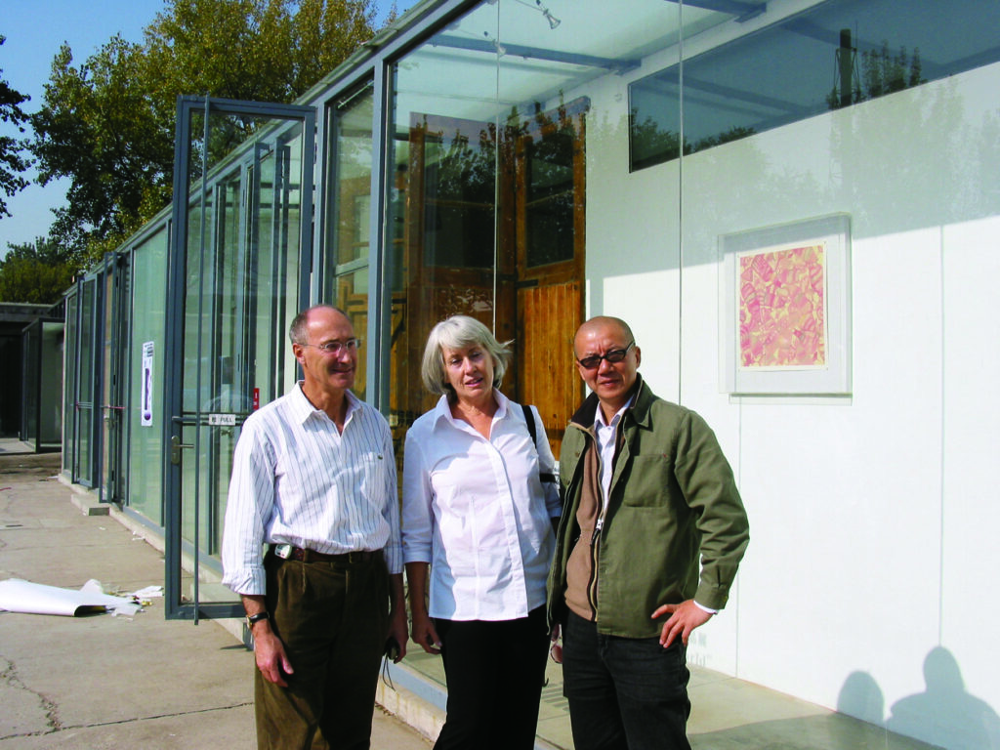
16. Kerr Neilson, Judith Neilson and Wang Zhiyuan, 798 Art Zone, Beijing, 2006
The individual-and-time relationship has always been a topic that historians love to discuss, often explained using ancient propositions like “fate.” In 2019, Wang Zhiyuan returned to Australia for the second time for his child’s education. However, times have changed. At this point, China no longer retains the prosperous state it had at the beginning of the new century when he first returned, and Australia, by the same token, no longer holds the same enthusiasm and curiosity towards China as it did when he first set foot on its soil. In the span of just a few decades, shuttling between Beijing and Sydney, Wang has witnessed a mutual process of change and reversal in attitudes between China and the West. As an artist, Wang is inherently restless and curious. Unlike most artists who rely solely on “images,” he does not pursue fixed symbols and forms. However, he has always believed in the power of art, echoing the viewpoint of his friend and philosopher Santiago Zabala: “Only art can save us.”(fig. 17) (15) More precisely, he believes that beneath politics lies a deeper spiritual aspect, namely aesthetics. This aligns with the Adorno ‘s argument that art must maintain autonomy. Perhaps for this reason, his works do not engage in grand narratives (a common trend among his peers in mainland China during the 1990s), allowing his thoughts to remain uninhibited by the sweeping changes of the times. While deconstruction is prevalent in his works, it is not the main theme; rather, it serves as a means to depict the seriousness of the past in a light-hearted and humorous tone. Just like his pen-and-ink “Trilogy of Loyalty” (2015, later adapted into an animated short film), what he actually wants to express is an existentialist detachment: the “tenacity” and loyalty of the right fist are simply due to biological desires, and “transcendence” is merely the disappearance of such desires. It “flies away,” and one can then find “contentment.”(fig. 18)
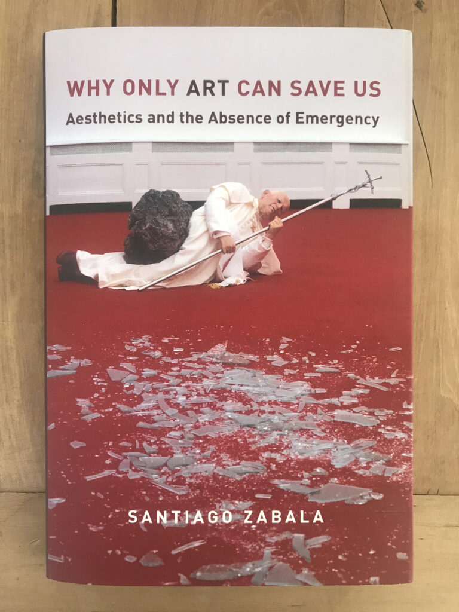
17. Santiago Zabala, Why Only Art Can Save Us, 2017
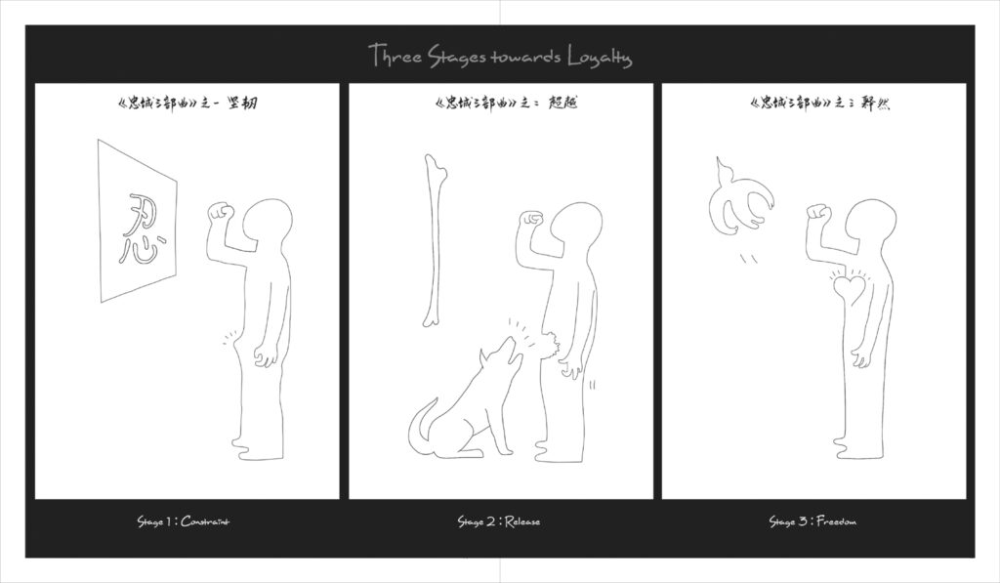
18. Trilogy of Loyalty, animation stills, 2015
Wang Zhiyuan is perhaps the most successful artist I’ve encountered in evading categorization (of course, he can’t be classified as “evading categorization”). This “evasion” is by no means deliberate on his part; rather, it is the result of the unique era and life experiences that have endowed him with enough mental bandwidth to do so. Perhaps what he contemplates is similar to the questions explored in the book that deeply influenced him, “Complexity” (16) by Mitchell Waldrop: Why did the Soviet Union’s rule over Eastern Europe collapse so suddenly in just a few months in 1989? Why did the stock market plummet by over 500 points on a Monday in October 1987? Ancient species and ecosystems often remained stable for millions of years, only to go extinct or evolve into new species in a moment in geological time. Why is that? (fig. 19) Clearly, these are the psychological characteristics of an open era, indicating the uncertainty and anxious anticipation of the new world during that period. Although Wang’s works are difficult to classify, they all address contemporary consciousness and the issues of the present era. Therefore, in this sense, they all belong to the category of “contemporary culture.”
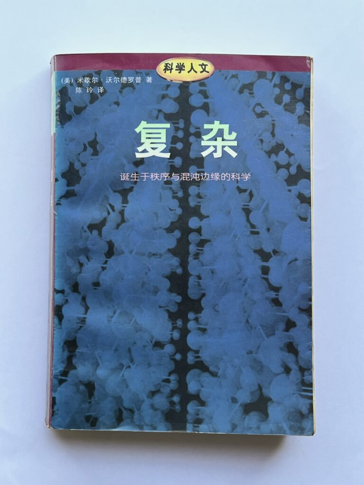
19. Mitchell Waldrop, Complexity, Chinese translation, 1997
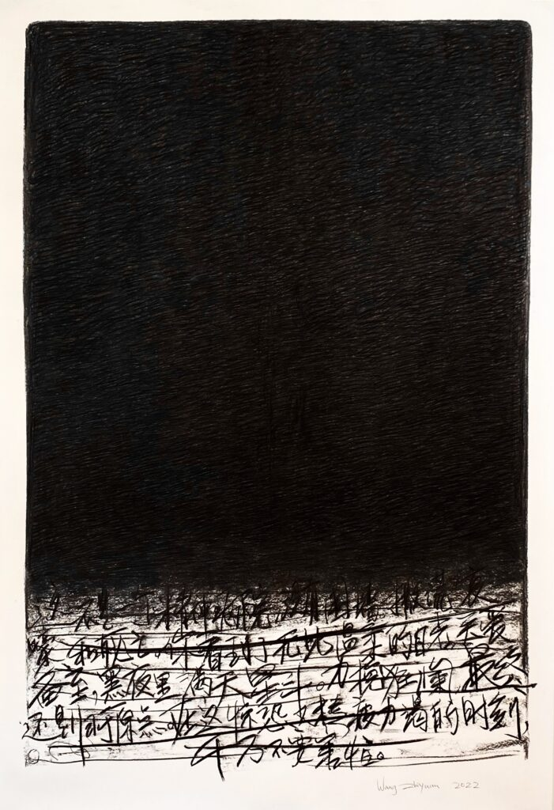
20. I Know the Darkness, charcoal on paper, 225x152cm, 2022
Life seems to be like a circle, and so does time. Some people experience only a segment of this circle in their lifetime, while others witness the entire journey of the circle completing. I remember Wang Zhiyuan saying in an interview that it’s natural for Chinese people to make dumplings, but selling hamburgers is out of the question. This makes sense, but currently, there’s a mutual disinterest and detachment from each other. In China, the enthusiasm for embracing the world that we once had is nowhere to be found. Instead, all we see is self-indulgent acts like “Chinese-style hamburgers.”(17) Although cultural confidence born out of nationalism, or what’s now termed as ” rising East and declining West,” is not a product of the past decade (18), the current domestic propaganda “national style” and “national trend” clothing, songs (with some poorly imitated Peking opera tones wedged in), have degenerated into blatant speculative behaviors, serving the official will to incite nationalist pride through sensory kitsch in order to profit from it. However, if time truly is circular, I believe that perhaps one day in the future, we’ll return to an inspiring era. In this sense, the future holds great promise. Just like what Wang Zhiyuan wrote on one of his works in “I Know the Darkness”: ” This is not a lunatic asylum, there’s no fence. Lies, howls and death. You see incredibly tender glances, absolute loving care, the dark night full of stars. Forcing back wild waves, finally you still return to the beginning. At this point of terror and exhaustion, you must not panic. ”(fig. 20)
Footnotes:
1. My previous review: https://www.randian-online.com/np_blog/glance-close-to-the-warm/
2. “The world is in great chaos, the situation is excellent” is a famous quote by Mao Zedong, which was a frequently used headline in propaganda materials during both the Mao era and the post-Mao era for quite a long time.
3. Standard vocabulary used by the Mao era to propagate negative images of the West to the Chinese people.
4. Taken from Mao Zedong’s speech at the National Propaganda Work Conference of the Communist Party of China in March 1955. On May 31, 1966, the People’s Daily published a editorial titled “Sweep Away All Monsters and Demons” drafted and revised under the instruction of Chen Boda, calling for the “sweeping away of the large number of monsters and demons entrenched in the ideological and cultural positions.” Subsequently, this fixed usage was often used during the Cultural Revolution to attack intellectuals.
5. Of course, there exist artists like Wang Dongling who are skilled in using ink to maximize the Oriental romanticism in their sorcerer’s-dance-style performances, with a recent example being Bing Yi’s series of “ink performances”. However, this should belong to the category of postcolonial culture, which I won’t delve into here.
6. For the difference between the two and the significance of “postmodernism” in China in the 1990s, refer to Dai Jinhua’s “Invisible Writing,” published by Peking University Press in 2018, pages 224-226.
7. Until 2023, even after he had left office for many years, he continued to publish pro-China remarks such as “the China threat theory is unfounded” and “Chinese people will not attack Australia.”
8. At that time, Chinese artists relatively active in the Australian art scene actually belonged to the second generation of Chinese immigrants in Australia, or immigrants from Hong Kong and Taiwan, such as Lindy Lee and John Young.
9. Jean Baudrillard, The Consumer Society: Myths and Structures.(Sage, London, England, 1998). P35
10. The term “Petite bourgeoisie,” as a social class, can be traced back to the French Revolution era and was used by theorists like Karl Marx to refer to the sub-stratum of bourgeoisie consisting of shopkeepers and self-employed craftsmen. However, in the Chinese context, it is a typical term from the Cultural Revolution used to criticize works of art related to the West.
11. In the Chinese context, “Hedonism” is a term from the Cultural Revolution used to criticize individualistic tendencies and artworks that exhibit individualism.
12. The Chinese idiom originally referred to soft and feeble music that made people feel dejected and listless. However, in the 1980s, it was used to criticize artistic works depicting love. For example, in the early 1980s, official authorities criticized Teresa Teng’s songs as “languid music.”
13. Jeff Gibson, “Avant-Grunge,” Art & Text Magazine, 1993.
14. https://www.afr.com/companies/financial-services/kerr-neilsons-big-bet-on-china-20171003-gytbdr. Accessed March 2024.
15. Santiago Zabala, “Why Only Art can Save Us: Aesthetics and the Absence of Emergency,” Columbia University Press, 2017.
16. Michelle Waldrop, “Complexity: The Emerging Science at the Edge of Order and Chaos,” Simon and Schuster, 1993
17. A hamburger brand established in 2012 by Fuzhou Tastein Catering Management Co., Ltd., has expanded its number of stores significantly since 2022.
18. As early as the 1990s, narratives like “Beijinger in New York” and “Chinese Women in Manhattan,” portraying Chinese success in the mainstream Western world, have already laid the foundation for this narrative of imaginative victory. However, the underlying tone of this “victory” still stems from deep-seated inferiority.
By Dr. Liang Shuhan 2024
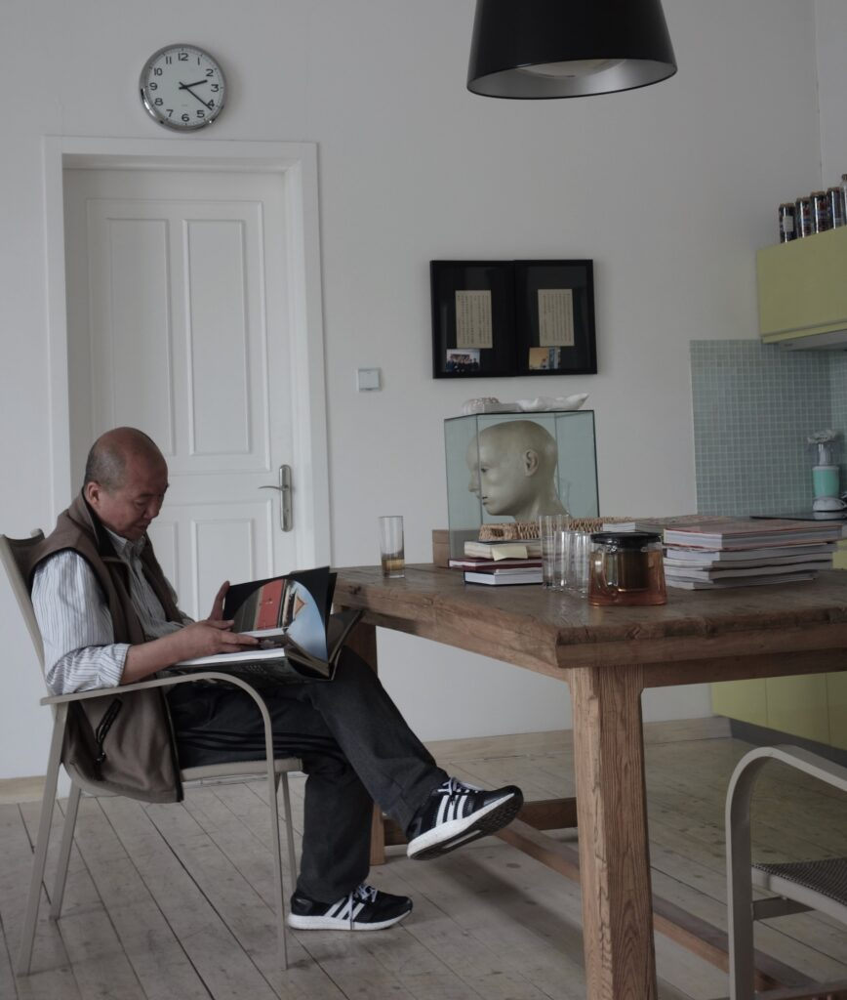
Wang Zhiyuan, Chinese-Australian artist, obtained a Bachelor’s degree from the Central Academy of Fine Arts in 1984 and a Master’s degree from the Sydney College of the Arts in 2000. He moved to Australia in 1989. His works are widely collected by institutions including the National Gallery of Australia, the Royal Melbourne Institute of Technology, the Art Gallery of South Australia, and the White Rabbit Gallery. He returned to Beijing in 2002 and established his studio in the 798 Art Zone. He assisted the Australian collector Judith Neilson in establishing the White Rabbit Chinese Contemporary Art Collection and served as its collection consultant from 2006 to 2012. With Judith’s support, he curated the exhibition ” This Future of Ours ” at the Red Brick Art Museum in Beijing in 2016.
He is currently based in Beijing and Sydney.
www.wangzhiyuanart.com